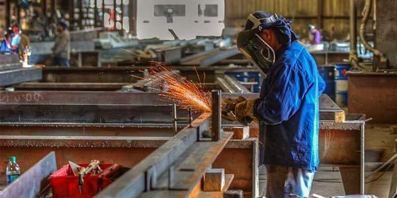
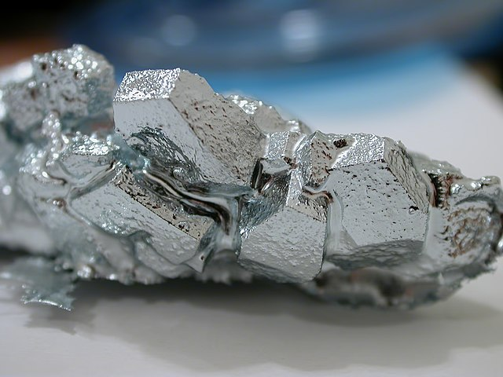

Fabrikasi
Produksi benda berbahan logam.
Mata pelajaran Teknik Fabrikasi Logam dan Manufaktur (TFLM) adalah mata pelajaran yang diajarkan di Sekolah Menengah Kejuruan (SMK) untuk Jurusan Teknik Fabrikasi Logam dan Manufaktur (TFLM). Teknik Fabrikasi Logam dan Manufaktur (TFLM) merupakan salah satu Kompetensi Keahlian dari Program Keahlian: Teknik Mesin, dan Bidang Keahlian: Teknologi dan Rekayasa. Menyediakan pelayanan berupa pemesinan.


|

FabrikasiProduksi benda berbahan logam. |

LogamPemilihan bahan-bahan logam. |
ManufakturPemesinan seperti pemotongan dan bubut. |